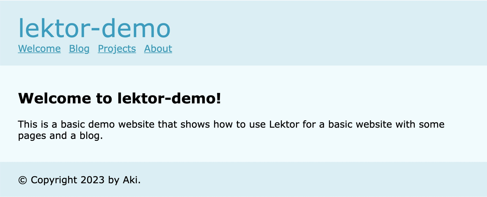

Lektorはコマンドラインツールです。インストール要件は、環境にPython3.6以上が入っていることです。
画像の最適化や動画のサムネイル作成などにimagemagickとffmpegを利用しますが、その機能を利用するまで必要ありません。
Lektorは、python製コマンドラインツールのパッケージマネージャpipxでインストールします。
$ brew install pipx
$ pipx ensurepath
$ python -m pip install --user pipx
$ python -m pipx ensurepath
$ pipx install lektor
quickstartコマンドにより、対話形式でプロジェクトが作成されます。
$ lektor qickstart
プロジェクト名は、lektor-demo とします。あとは全てリターンで大丈夫です。
Step 1: A project needs a name.
プロジェクトは名前が必要です。
> Project Name: lektor-demo
Step 2: Your name.
あなたの名前は？
> Author Name [your name] : ⏎
Step 3: This is the path where the project will be located.
プロジェクトを配置するパス
> Project Path [current path]: ⏎
Step 4: Do you want to generate a basic blog module?
基本ブログモジュールを生成しますか？
> Add Basic Blog [Y/n]: ⏎
That's all. Create project? [Y/n] ⏎
以上です。プロジェクトを作成しますか？
プロジェクトのディレクトリに入り、ローカルサーバを起動します。
$ cd lektor-demo
$ lektor serve
ブラウザから http://127.0.0.1:5000 へアクセスします。

|- assets/
|- static/
|- style.css
|- content/
|- about/
|- blog/
|- first-post/
|- contents.lr
|- contents.lr
|- projects/
|- contents.lr
|- models/
|- blog-post.ini
|- blog.ini
|- page.ini
|- templates/
|- macros/
|- blog.html
|- pagination.html
|- blog-post.html
|- blog.html
|- layout.html
|- page.html
lektor-demo.lektorproject
コマンドラインで、--helpオプションを使います。
$ lektor --help
$ lektor --help
Usage: lektor [OPTIONS] COMMAND [ARGS]...
The lektor management application.
This command can invoke lektor locally and serve up the website. It's
intended for local development of websites.
Options:
--project PATH The path to the lektor project to work with.
--language TEXT The UI language to use (overrides autodetection).
--version Show the version and exit.
--help Show this message and exit.
Commands:
build Builds the entire project into the final artifacts.
clean Cleans the entire build folder.
content-file-info Provides information for a set of lektor files.
deploy Deploy the website.
dev Development commands.
plugins Manages plugins.
project-info Shows the info about a project.
quickstart Starts a new empty project.
server Launch a local server.
さらに、lektor serveの使い方が見たい場合も、--helpオプションを使います。
$ lektor serve --help